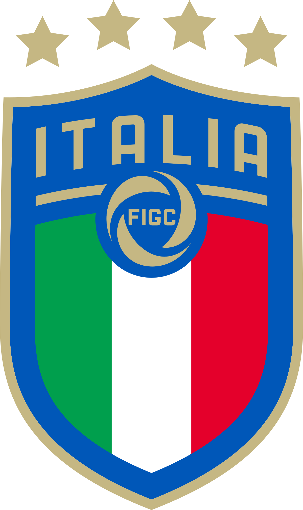

Italia
Tambem com muita tradição e qualidade no futebol, a italia tem grande reconhecimento e tradição no futebol. Ao todo são quatro conquistas de copa do mundo.
Grandes seleções
Tambem com muita tradição e qualidade no futebol, a italia tem grande reconhecimento e tradição no futebol. Ao todo são quatro conquistas de copa do mundo.